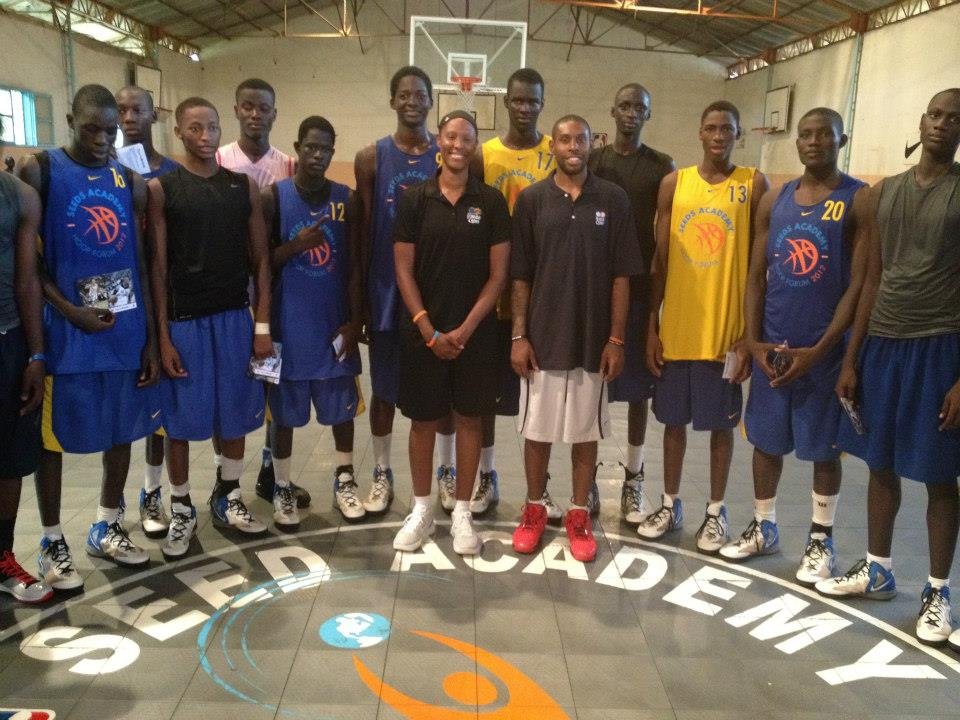
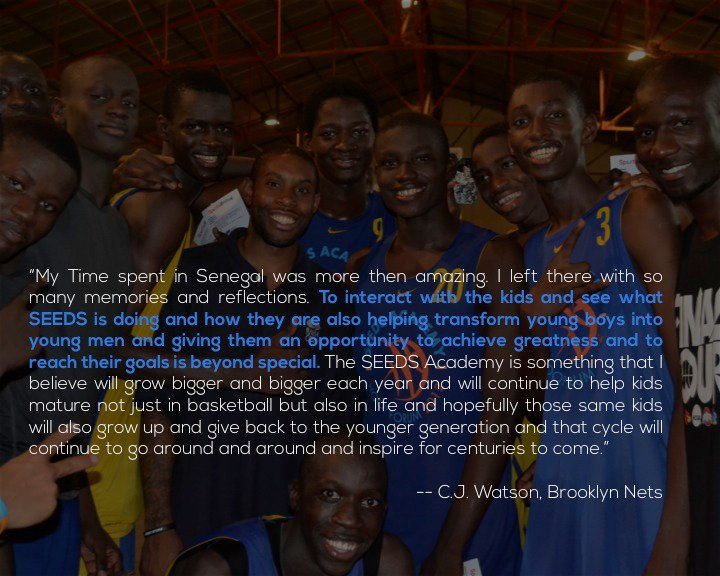
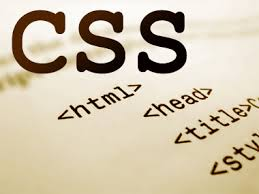

Je suis une personne qui suis de près le sport en général que ce soit le foot le basket, le tennis etc... Car j’ai grandi dans une famille ou j’ai un père qui est un grand fan de basket Ball et un oncle qui est un basketteur professionnel qui joue dans l’équipe nationale senior du Sénégal, il se nomme Malick Badiane.
Comme vous pouvez le remarquer je ne peux pas échapper au virus du basketball.

Au début comme tout garçon j’ai pratiqué le foot dans les rues de Thiès. Mais mon père a voulu que je fasse du basket. De là je me suis inscris à l’école de basket FALLOU BADIANE pour faire plaisir à mon père mais petit à petit je trouvais de la joie à jouer au basketball et de m’y consacrer presque tout mon temps libre.
J’ai commencé à pratiquer le basket à l’union sportif de RAIL (US RAIL) qui se trouve a thiès. J’ai remporté 2 coupes régionales avec cette équipe l’une en minime et l’autre en cadet.
Apres je suis rentré dans une académie de basket nommée SEEDS ACADEMY ou on allie sports et études mais je n’avais pas la chance d’aller aux états unis pour continuer mes études.
En ce moment je joue à ASCC BOPP.
Mes équipes de basket sont US RAIL et les BOSTONS CELTICS et mes joueurs préférés sont Ibrahima Mbengue(US GOREE) Gorgui Sy Dieng (LOUISVILLE) Paul Pierce (CELTICS) et Chris Paul ( LOS ANGELES CLIPPERS)
La première fois que j’ai découvert l’ordinateur j’ai commencé à m’intéresser sur sa conception et son mode de fonctionnement.
Je suis l’actualité des nouvelles technologies et je suis fasciné par ce monde , chaque jour tu apprends des choses nouvelles.
C’est cette passion qui m’a poussé à faire des études en télécommunications pour apprendre la conception des nouveaux outils informatiques.
A chaque fois que j’ai du temps libre je fais des recherches sur les langages informatiques les derniers logiciels conçus pour essayer approfondir mes connaissances sur l’informatique car lorsqu’on parle de technologie on fait allusion à la recherche et à la curiosité.

Lorsque je me sens seul ou bien quand je suis triste ou en colère j’écoute souvent de la musique pour me distraire car les paroles me donnent la force et me poussent à aller de l’avant La plupart des genres musicaux que j’écoute sont le mbalax et le reggae.
Copyright © 2013 -Tous droits résérvés à l'auteur .